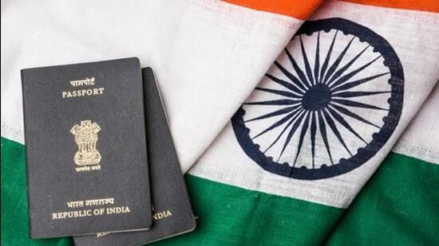

The Saudi Arabian embassy in New Delhi said the decision was made because of the strategic partnership between the two countries
For representational purposes only. (Getty Images/iStockphoto)
Saudi Arabia announced on Thursday that Indian nationals will no longer be required to submit a Police Clearance Certificate (PCC) to obtain a visa, a decision expected to benefit workers seeking employment in the West Asian country.
The 2.2 million-strong Indian community is the largest expatriate community in Saudi Arabia, and also one of the largest concentration of Indians in West Asia. While a lot of Indians returned to India during the Covid-19 pandemic, there has been an increase in the number of people going back to Saudi Arabia for employment.
The Saudi Arabian embassy in New Delhi said the decision was made because of the strategic partnership between the two countries and was part of steps to further boost bilateral ties.